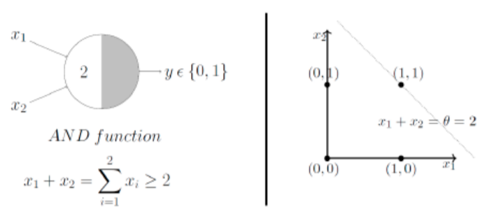

Redes Neuronales Introducción#
import pandas as pd
from IPython import display
import numpy as np
Se carga en memoria un cuaderno con utilidades de presentación#
run 05.0_Redes_Neuronales_Utilidades.ipynb
<Figure size 640x480 with 0 Axes>
load done!
Neurona de McCulloch y Pitts#
[McCulloch and Pitts, 1943] propusieron el primer modelo de neurona artificial denominado TLU (Threshold Logic Unit) o LTU (Linear Threshold Unit), unidad de umbral lineal. A esta neurona artificial también se le denomina Perceptrón.
El modelo parte de \(n\) entradas \((x_1, x_2, ..., x_j, ..., x_n)\) a la que se aplica una ponderación lineal más un umbral (que suele denominarse sesgo o bias, \(b\)):
A la que se aplica una función de activación no lineal, que en el modelo de McCulloch y Pitts es una función escalonada del tipo
Resultando un modelo con salida digital o binaria. Las entradas \((x_1, x_2, ..., x_j, ..., x_n)\) equivalen a las dendritas, el parámetro \(b\) se denomina umbral o bias y la salida \(a\) es el axón. Durante el entrenamiento se compara \(a\) con los valores reales que se encuentran en \(y\)

Significado y entrenamiento#
El modelo puede utilizarse como clasificador y es un dispositivo entrenable. En su definición más simple con dos neuronas de entrada resulta
siendo \(b + w_1 x_1+w_2 x_2=0 \) una recta que define la región de decisión. Representa un discriminador líneal y está limitado a clasificar conjuntos de datos linealmente separables.
El entrenamiento para ajustar los pesos se basa en la regla de Hebb:
Siendo \(y^r\) el valor real e \(a^r\) el valor estimado que se corresponde con el elemento \(r\) del set de entrenamiento.
La regla representa el recalculo de los pesos del perceptrón de la época o iteración de entrenamiento \(t\) a la \(t+1\). En un set de entrenamiento linealmente separable converge en un tiempo finito y con independencia de los pesos de partida, si no están separados linealmente el proceso de entrenamiento oscilará. En 1969 Minsky y Papert demuestran que el perceptrón simple no puede resolver problemas no lineales
# Modelo de Neurona Artificial
class Perceptron(object):
"""Clasificador Perceptron Simple.
Parameters
------------
eta : Ratio de entrenamiento (flotante entre 0.0 y 1.0)
n_iter : Entero con el número de iteraciones o épocas a aplicar al conjunto de entrenamiento.
random_state : Semilla para el generador aleatorio que inicializa los pesos.
Attributes
-----------
w_ : Array-1d con los pesos tras el ajuste.
errors_ : list de números con los errores en cada época.
"""
def __init__(self, eta=0.01, n_iter=50, random_state=1):
self.eta = eta
self.n_iter = n_iter
self.random_state = random_state
def fit(self, X, y):
"""Ajuste de los datos de entrenamiento.
Parametros
----------
X : {array}, shape = [n_samples, n_features]
Vector de entrenamiento, donde n_samples es el número de ejemplos y
n_features es el número de características.
y : array, shape = [n_samples] con los valores Objetivo
Returna
-------
self : objecto
"""
rgen = np.random.RandomState(self.random_state)
self.w_ = rgen.normal(loc=0.0, scale=0.01, size=1 + X.shape[1])
self.errors_ = []
for _ in range(self.n_iter):
errors = 0
for xi, target in zip(X, y):
update = self.eta * (target - self.predict(xi)) ## Regla de Hebb
self.w_[1:] += update * xi
self.w_[0] += update
errors += int(update != 0.0)
self.errors_.append(errors)
return self
def net_input(self, X):
"""Calcula el valor de una entrada a la red con la suma de pesos"""
return np.dot(X, self.w_[1:]) + self.w_[0]
def predict(self, X):
"""Función de activación que retorna la etiqueta de la clase despues de la función suma """
return np.where(self.net_input(X) >= 0.0, 1, 0)
Primeras aplicaciones del modelo de McCulloch y Pitts. Puerta lógica AND#
Una de las primeras aplicaciones del modelo es resolver algunas puertas lógicas, como AND o OR. Por ejemplo la tabla de la verdad de la puerta AND es
cols = ['x1', 'x2', 'AND']
puerta_and=[[0,0,0], [0,1,0], [1,0,0], [1,1,1]]
df = pd.DataFrame(puerta_and, columns=cols)
df.head()
| x1 | x2 | AND | |
|---|---|---|---|
| 0 | 0 | 0 | 0 |
| 1 | 0 | 1 | 0 |
| 2 | 1 | 0 | 0 |
| 3 | 1 | 1 | 1 |
Se puede adoptar una solución basada en la recta de separación \(x_1+x_2=2\) tomando un valor \(1\) si \(x_1+x_2\ge 2\) y en caso contrario \(0\)
{kind=link}
Aquí vamos a resolverlo entrenando el Perceptron
X = df.values[:,0:2]
y = df.values[:,2]
nn = Perceptron(eta=0.01, n_iter=50)
nn.fit(X, y)
nn.w_
array([-0.03375655, 0.02388244, 0.01471828])
plot_decision_regions(X, y, classifier=nn)
plt.xlabel('X')
plt.ylabel('Y')
plt.legend(loc='upper left')
plt.show()
La puerta OR#
cols = ['x1', 'x2', 'OR']
puerta_or=[[0,0,0], [0,1,1], [1,0,1], [1,1,1]]
df = pd.DataFrame(puerta_or, columns=cols)
df.head()
| x1 | x2 | OR | |
|---|---|---|---|
| 0 | 0 | 0 | 0 |
| 1 | 0 | 1 | 1 |
| 2 | 1 | 0 | 1 |
| 3 | 1 | 1 | 1 |
X = df.values[:,0:2]
y = df.values[:,2]
nn = Perceptron(eta=0.01, n_iter=10)
nn.fit(X, y)
nn.w_
array([-0.00375655, 0.00388244, 0.00471828])
plot_decision_regions(X, y, classifier=nn)
plt.xlabel('X')
plt.ylabel('Y')
plt.legend(loc='upper left')
plt.show()
¿Y que ocurre con la puerta XOR?#
cols = ['x1', 'x2', 'XOR']
puerta_xor=[[0,0,0], [1,0,1], [0,1,1], [1,1,0]]
df = pd.DataFrame(puerta_xor, columns=cols)
df.head()
| x1 | x2 | XOR | |
|---|---|---|---|
| 0 | 0 | 0 | 0 |
| 1 | 1 | 0 | 1 |
| 2 | 0 | 1 | 1 |
| 3 | 1 | 1 | 0 |
X = df.values[:,0:2]
y = df.values[:,2]
nn = Perceptron(eta=0.01, n_iter=50)
nn.fit(X, y)
nn.w_
array([ 0.00624345, -0.00611756, -0.01528172])
plot_decision_regions(X, y, classifier=nn)
plt.xlabel('X')
plt.ylabel('Y')
plt.legend(loc='upper left')
plt.show()
¡No consigue clasificar bien el conjunto, porque no es linealmente separable!